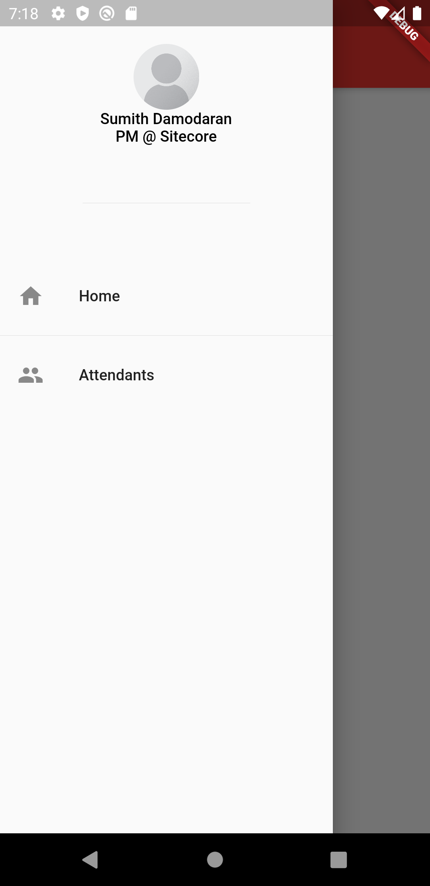
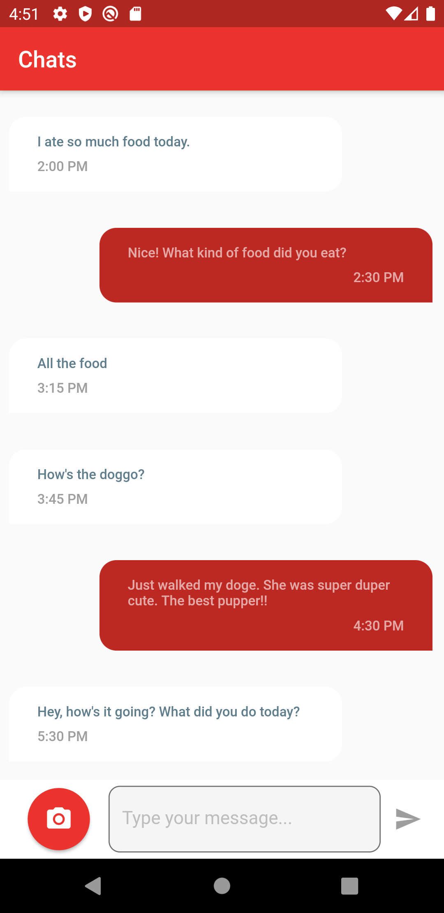
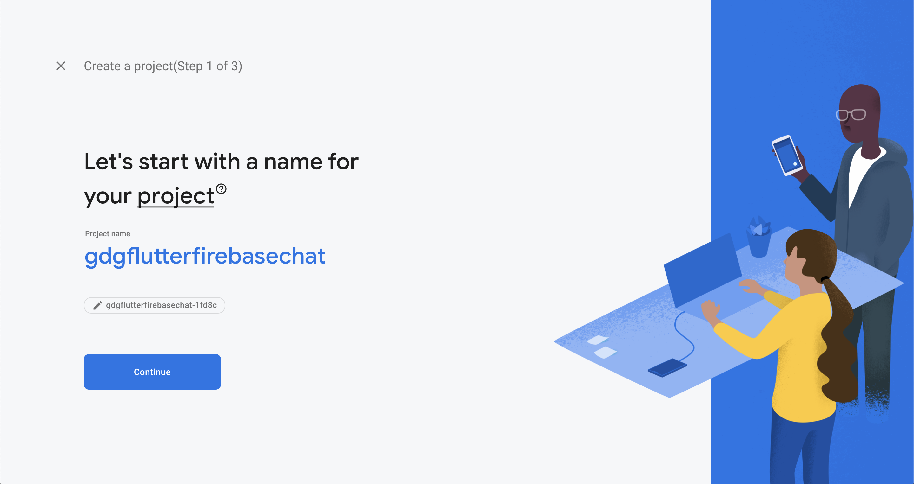
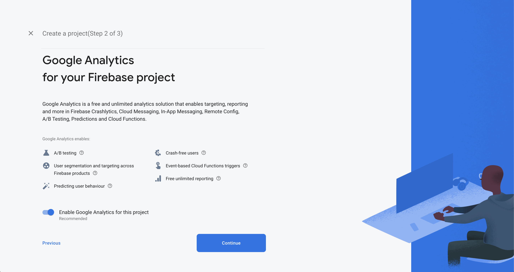
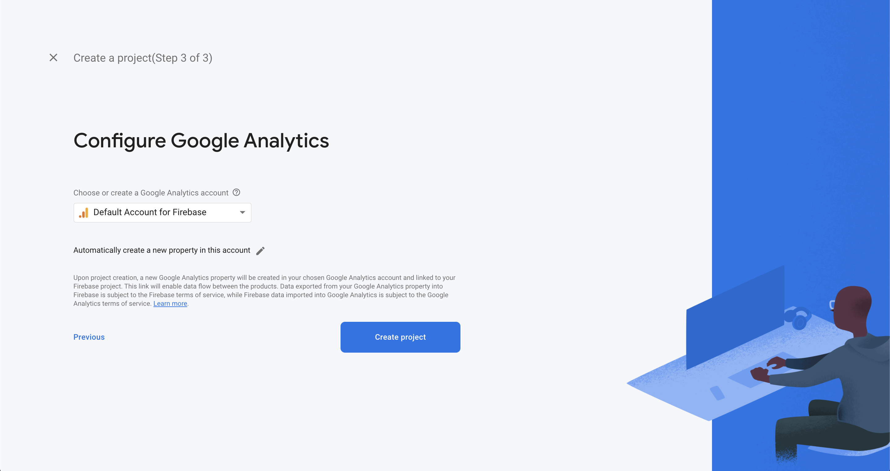

In this codelab we want to show how to implement Firebase into a Flutter app.
We will build a chat app where users can log in / sign in with Firebase, interact with Firestore, upload images to Firebase Storage, push notifications and analytics.
We will show how to setup up the app with Firebase and how to create a Firebase project.
Have a Google account that you will use for login to Firebase.
See the official prerequisites on the Firebase documentation
You can download the project from GitHub.
Be able to run Flutter on either a simulator or physical device.
You can follow the steps in the Flutter website: Getting Started
When you have Flutter setup on your computer then you are ready to create the Flutter project.
With this simple Flutter command you will create a sample / "skeleton" app and will be able to run right after creation.
flutter create gdg_flutter_firebase_chat
You can run the app from the terminal or run it in an IDE such as Android Studio, Intellij IDEA or VS Code (these editors has plugins for Flutter and dart support).
In the terminal navigate to the newly created project, gdg_flutter_firebase_chat, and run the flutter run command.
cd gdg_flutter_firebase_chat
flutter run
Now that we can run our Flutter code on an emulator or device, we will try to build something for ourself.
We will now remove all the code in the main.dart file and fill in with this code below.
import 'package:flutter/material.dart';
void main() {
runApp(
MaterialApp(
title: "GDG Firebase chat",
home: Scaffold(
appBar: AppBar(
title: Text("GDG Firebase chat"),
),
),
),
);
}
Let us delete the test folder as we will not be needing that in this codelab.
You can do it via the terminal, folder or IDE.
In the terminal you can use this command:
rm -r test/
Now we will create a new folder in the lib folder. Let us name the folder helpers, and the purpose of this folder is to have files with code that will be used throughout the project. Such an example could be constants like colours.
You can do it via the terminal, folder or IDE.
In the terminal you can use this command:
cd lib
mkdir helpers
While we are at it we will make a new dart file in that folder, app_constants.dart.
Your structure should look like this.

In app_constants.dart we will create a class called AppConstants which will have static fields that we can access throughout the app.
import 'package:flutter/material.dart';
class AppConstants {
static const String APP_PRIMARY_COLOR = "#EB342E";
static const String APP_BACKGROUND_COLOR = "#F6F8F9";
static const String APP_BACKGROUND_COLOR_WHITE = "#FFFFFF";
static const String APP_PRIMARY_COLOR_LIGHT = "#9f9f9f";
static const String APP_PRIMARY_COLOR_BLACK = "#000000";
static const String APP_PRIMARY_FONT_COLOR_WHITE = "#FFFFFF";
static const String APP_PRIMARY_COLOR_ACTION = "#BC2923";
static const String APP_PRIMARY_ROOM_COLOR = "#707070";
static const String APP_PRIMARY_COLOR_GREEN = "#009099";
static const String APP_BACKGROUND_COLOR_GRAY = "#D0D0D0";
static Color hexToColor(String code) {
return Color(int.parse(code.substring(1, 7), radix: 16) + 0xFF000000);
}
}
Now we will update the theme of the app with the colors we want. We have our colors in the AppConstantsclass.
We update the theme field in the MaterialApp(...) in our main.dart file.
Remember to import app_constants in the import section in the top of the file.
import 'package:flutter/material.dart';
import 'package:gdg_flutter_firebase_chat/helpers/app_constants.dart';
void main() {
runApp(
MaterialApp(
title: "GDG Firebase chat",
theme: ThemeData(
primaryColor: AppConstants.hexToColor(AppConstants.APP_PRIMARY_COLOR),
backgroundColor:
AppConstants.hexToColor(AppConstants.APP_BACKGROUND_COLOR),
primaryColorLight:
AppConstants.hexToColor(AppConstants.APP_PRIMARY_COLOR_LIGHT),
accentColor: Colors.black,
accentIconTheme: IconThemeData(color: Colors.black),
dividerColor: Colors.black12,
textTheme: TextTheme(
caption: TextStyle(color: Colors.white),
),
),
home: Scaffold(
appBar: AppBar(
title: Text("GDG Firebase chat"),
),
),
),
);
}
Let us now add assets to our project. We will first create a folder called assets and then create a sub folder within the assets folder, named images.
The end result should look like this:

You can download the user_placeholder.jpg here and then put it in your images folder.
In the pubspec.yaml we need to specify where the assets are located.
flutter:
...
assets:
- assets/images/
Add an App Drawer to Your App
Now we will add an app drawer to the app.
We will create a method _appDrawer() that will return an AppDrawerWidget.
_appDrawer() {
return Drawer(
child: Column(
children: <Widget>[
DrawerHeader(
child: Column(
mainAxisAlignment: MainAxisAlignment.start,
children: <Widget>[
CircleAvatar(
radius: 30.0,
backgroundImage:
AssetImage('assets/images/user_placeholder.jpg'),
backgroundColor: Colors.transparent,
),
Text(
'Sumith Damodaran',
style: TextStyle(color: Colors.black),
),
Text(
'PM @ Sitecore',
style: TextStyle(color: Colors.black),
)
],
),
),
Spacer(),
ListTile(
leading: Icon(Icons.home),
title: Text('Home'),
onTap: () {}, // Handle tap of the app drawer item
),
Divider(),
ListTile(
leading: Icon(Icons.people),
title: Text('Attendants'),
onTap: () {}, // Handle tap of the app drawer item
),
Spacer(flex: 8),
],
),
);
}
We will add the _appDrawer() to the drawer field in our Scaffold(...):
home: Scaffold(
drawer: _appDrawer(),
appBar: AppBar(
title: Text("GDG Firebase chat"),
),
),
Run the app and see that the changes should look like this:

Now we will create the chat screen. but first let us create another folder in the lib folder called screens. This folder will have files that specific to screens. In this case we will create a file called chat_screen.dart.
The ChatScreen class will be a StatefulWidget as we will be inputting text from the keyboard.
import 'package:flutter/material.dart';
class ChatScreen extends StatefulWidget {
@override
_ChatScreenState createState() => _ChatScreenState();
}
class _ChatScreenState extends State<ChatScreen> {
@override
Widget build(BuildContext context) {
return Scaffold(
appBar: AppBar(title: Text("Chats")),
);
}
}
In main.dart we will change the home parameter in MaterialApp(...).
home: ChatScreen(),
Now run and check that you see the chat screen.
We want our design to look more or less like the design.
Design:

We know the screen will have a text field so we will initialize a TextEditingController as a field in the class _ChatScreenState.
bool _isComposing = false; // Being used later to determine when TextEditingController is used to compose a message.
final TextEditingController _textMessageController = TextEditingController();
Then we will create a method _buildMessageComposer() where our input UI will be build.
_buildMessageComposer() {
return Container(
padding: EdgeInsets.symmetric(horizontal: 8.0),
height: 70.0,
color: Colors.white,
child: Row(
children: <Widget>[
RawMaterialButton(
onPressed: () {},
child: Icon(
Icons.camera_alt,
color: Colors.white,
size: 25.0,
),
shape: CircleBorder(),
elevation: 2.0,
fillColor: Theme.of(context).primaryColor,
padding: EdgeInsets.all(15.0),
),
Expanded(
child: TextField(
controller: _textMessageController,
textCapitalization: TextCapitalization.sentences,
onChanged: (value) {},
decoration: InputDecoration(
border: OutlineInputBorder(
borderRadius: BorderRadius.all(
Radius.circular(10.0),
),
),
hintText: 'Type your message...',
filled: true,
hintStyle: TextStyle(color: Colors.grey[400]),
),
),
),
IconButton(
icon: Icon(Icons.send),
iconSize: 25.0,
color: Theme.of(context).primaryColor,
onPressed: () {},
),
],
),
);
}
We will then have the Scaffoldbody parameter to be the _buildMessageComposer().
body: _buildMessageComposer(),
Now run the app.
The screen should now look like this:

Before we start creating the UI for the messages, we should create some model classes, user and message.
Let's create a new folder in the lib folder, models. This will have all the model files we need.
Now create two files in the models folder: user.dart and message.dart.
user.dart:
class User {
final int id;
final String name, profileImageUrl, email, bio;
User({
this.id,
this.name,
this.profileImageUrl,
this.email,
this.bio,
});
}
message.dart
import 'package:gdg_flutter_firebase_chat/models/user.dart';
class Message {
final User sender;
final String
time; // Would usually be type DateTime or Firebase Timestamp in production apps
final String text;
final bool isLiked;
final bool unread;
Message({
this.sender,
this.time,
this.text,
this.isLiked,
this.unread,
});
}
// EXAMPLE MESSAGES IN CHAT SCREEN
List<Message> messages = [
Message(
sender: martin,
time: '5:30 PM',
text: 'Hey, how\'s it going? What did you do today?',
isLiked: true,
unread: true,
),
Message(
sender: currentUser,
time: '4:30 PM',
text: 'Just walked my doge. She was super duper cute. The best pupper!!',
isLiked: false,
unread: true,
),
Message(
sender: martin,
time: '3:45 PM',
text: 'How\'s the doggo?',
isLiked: false,
unread: true,
),
Message(
sender: martin,
time: '3:15 PM',
text: 'All the food',
isLiked: true,
unread: true,
),
Message(
sender: currentUser,
time: '2:30 PM',
text: 'Nice! What kind of food did you eat?',
isLiked: false,
unread: true,
),
Message(
sender: martin,
time: '2:00 PM',
text: 'I ate so much food today.',
isLiked: false,
unread: true,
),
];
Messages UI in Chat Screen
In our chat_screen.dart we create a new method _buildMessage() for our messages.
isMe will be used later so when know how the styling of a message should be. With this we know what messages have been sent from who.
_buildMessage(Message message, bool isMe) {
final Widget msg = Padding(
padding: EdgeInsets.all(8.0),
child: Container(
margin: isMe
? EdgeInsets.only(
top: 8.0,
bottom: 8.0,
left: 80.0,
)
: EdgeInsets.only(
top: 8.0,
bottom: 8.0,
),
padding: EdgeInsets.symmetric(horizontal: 25.0, vertical: 15.0),
width: MediaQuery.of(context).size.width * 0.75,
decoration: BoxDecoration(
color: isMe
? AppConstants.hexToColor(AppConstants.APP_PRIMARY_COLOR_ACTION)
: AppConstants.hexToColor(
AppConstants.APP_BACKGROUND_COLOR_WHITE),
borderRadius: isMe
? BorderRadius.only(
topLeft: Radius.circular(15.0),
topRight: Radius.circular(15.0),
bottomLeft: Radius.circular(15.0),
)
: BorderRadius.only(
topLeft: Radius.circular(15.0),
topRight: Radius.circular(15.0),
bottomRight: Radius.circular(15.0),
),
),
child: Column(
crossAxisAlignment: CrossAxisAlignment.start,
children: <Widget>[
Text(
message.text,
style: TextStyle(
color: isMe ? Colors.white60 : Colors.blueGrey,
fontSize: 12.0,
fontWeight: FontWeight.w600,
),
),
SizedBox(height: 8.0),
Row(
mainAxisAlignment:
isMe ? MainAxisAlignment.end : MainAxisAlignment.start,
children: <Widget>[
Text(
message.time,
style: TextStyle(
color: isMe ? Colors.white60 : Colors.grey,
fontSize: 12.0,
fontWeight: FontWeight.w600,
),
),
],
),
],
),
),
);
Remember to import the necessary packages, files and classes.
import 'package:gdg_flutter_firebase_chat/helpers/app_constants.dart';
import 'package:gdg_flutter_firebase_chat/models/message.dart';
Let's create a list of messages as a field in the class _ChatScreenState.
final List<Message> _messages = messages; // messages is the dummy data list in message.dart
Our build() method should now also iterate over the list of messages.
@override
Widget build(BuildContext context) {
return Scaffold(
appBar: AppBar(title: Text("Chats")),
body: ListView.builder(
reverse: true,
padding: EdgeInsets.only(top: 15.0),
itemCount: _messages.length,
itemBuilder: (BuildContext context, int index) {
final Message message = _messages[index];
final bool isMe = message.sender.id == currentUser.id;
return _buildMessage(message, isMe);
},
),
);
}
Run and see how it looks.
To make the list fit the screen with the text field where we compose messages, then we need to "expand" the view of the list.
@override
Widget build(BuildContext context) {
return Container(
color: Colors.white,
child: SafeArea(
top: false,
child: Scaffold(
appBar: AppBar(title: Text("Chats")),
body: GestureDetector(
onTap: () => FocusScope.of(context).unfocus(), // Will hide the keyboard when the user touches the messages list view.
child: Column(
children: <Widget>[
Expanded( // Expand widget to fill the available space
child: Container(
child: ListView.builder(
reverse: true,
padding: EdgeInsets.only(top: 15.0),
itemCount: _messages.length,
itemBuilder: (BuildContext context, int index) {
final Message message = _messages[index];
final bool isMe = message.sender.id == currentUser.id;
return _buildMessage(message, isMe);
},
),
),
),
_buildMessageComposer(),
],
),
),
),
),
);
}
Handle Composing messages
We will create a method to handle when a message has been submitted. This method will be called: _handleSubmitted and it will take in a String as a parameter so it can create a new message and add it to our list _messages.
void _handleSubmitted(String text) {
_textMessageController.clear();
setState(() {
_isComposing = false;
});
Message message = Message(
sender: currentUser,
time: '6:30 PM',
text: text,
isLiked: true,
unread: true,
);
setState(() {
_messages.insert(0, message);
});
}
Run the app and see that you can add new messages to the chat.

If you don't already have a Firebase account, then you can create one here. We will not be needing a paid plan for this codelab.
- Sign in to Firebase Console
- Go ahead and click "Add project"

- Enable Google Analytics
 - You can then choose to either configure Google Analytics with existing Google Analytics account or create a new account name.

The next step for us to do is configure one or more apps to our Firebase project. We will do this by registering the app's bundle ID with Firebase and then generate config files to put in the our project.

Android Configuration
You can find a detailed description on how to add Firebase to your Flutter app with Android configuration.
iOS Configuration
You can find a detailed description on how to add Firebase to your Flutter app with iOS configuration.